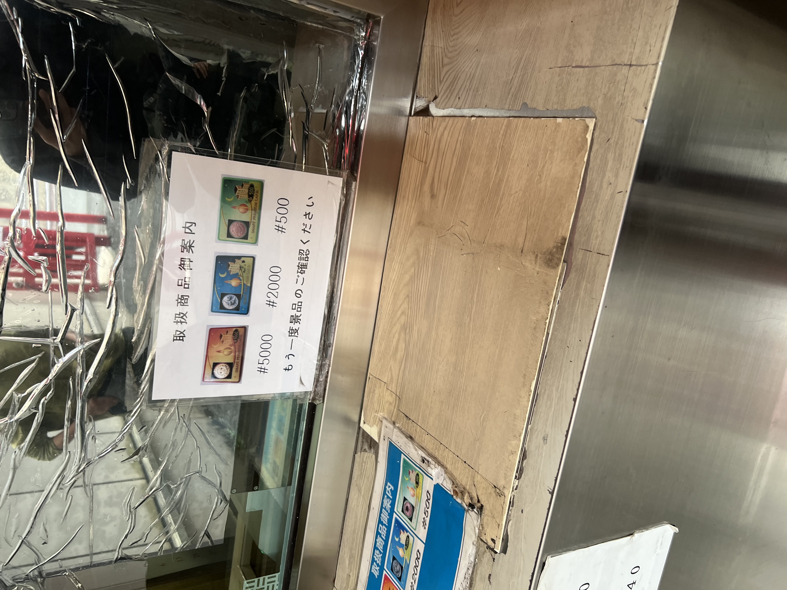

その景品を換金所に持っていくと現金に変えることが出来ます。
横浜駅の西口にはたくさんパチンコ店があります。
なので換金する場所も多いのです。
「どこの換金所に行っても問題ないだろう」と思っている方もいると思います。
しかしそうはいきません。
それぞれ対応した景品としか交換してくれないのです。
そのため間違いがないよう次の写真のようなものが換金場所に貼られています。
撮影日2022年10月9日 日曜日13:23 撮影場所：神奈川県横浜市西区 撮影者：田中悠翔
この景品の見分け方は左の黒い四角の中にある模様を確かめるか、真ん中のイラストか、右のQRコードを確認すれば見分けることが可能です。

撮影日2022年10月9日 日曜日13:24 撮影場所：神奈川県横浜市西区 撮影者：田中悠翔
ここでは三種類の景品が対応しています。この景品を見分ける方法は左の黒い四角の中にある模様を確かめるか、右にあるJANコードを確認すれば見分けることが可能です。

撮影日2022年10月9日 日曜日13:34 撮影場所：神奈川県横浜市西区 撮影者：田中悠翔
ここでの景品を見分ける方法は、左の黒い四角の中にある模様を確かめるか、右側のイラストを確かめれば見分けることが可能です。